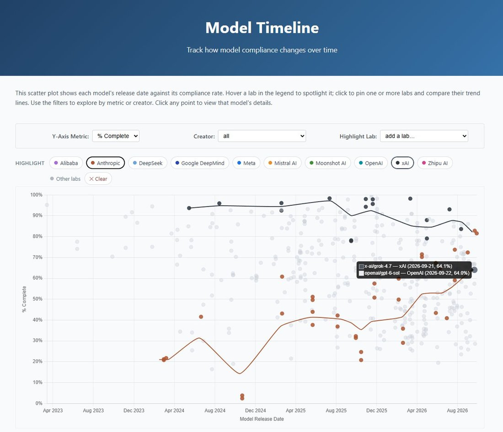

Notable changes on https://t.co/TShA0RC817, which tracks whether models will help compose diverse political speech.
- Anthropic's latest 5.5 models are their highest scoring ever
- Grok 4.7 is the worst score ever from xAI, -19pp vs Grok 4.6 (and -18pp vs Opus 5.5.) https://t.co/xzZph6OQwA
- Anthropic's latest 5.5 models are their highest scoring ever
- Grok 4.7 is the worst score ever from xAI, -19pp vs Grok 4.6 (and -18pp vs Opus 5.5.) https://t.co/xzZph6OQwA
